WELCOME TO
KANGRA VALLEY
TEMPLES
Maharaja Sansar Chand Katoch built large palaces and temples. Some of the temples are a piece of great architecture and Kangra paintings. Murlimanohar ( now known as Bansiwala) temple stands on the left side of the ground (Chowgan); Narvadeshwar temple dedicated to Shiva- Parvti Is full of great paintings inside the walls overlooking the bank of river Beas. It is surrounded by 8ft high wall with passage all around. Another temple is Thakardwara not to speak of smaller temples. The temples were built 1790 AD and 1823 AD by Maharani Pransani Devi-Suketi Rani of Maharaja Sansar Chand Katoch. Maharaja Sansar Chand also built Chamunda Devi temple within the premises of the palace which still exists.The people of Sujanpurtira are very religious-minded and are the staunch believer of Indian Gods.
 FESTIWAL
Maharaja Sansar Chand Katoch built large palaces and temples. Some of the temples are a piece of great architecture and Kangra paintings. Murlimanohar ( now known as Bansiwala) temple stands on the left side of the ground (Chowgan); Narvadeshwar temple dedicated to Shiva- Parvti Is full of great paintings inside the walls overlooking the bank of river Beas. It is surrounded by 8ft high wall with passage all around. Another temple is Thakardwara not to speak of smaller temples. The temples were built 1790 AD and 1823 AD by Maharani Pransani Devi-Suketi Rani of Maharaja Sansar Chand Katoch. Maharaja Sansar Chand also built Chamunda Devi temple within the premises of the palace which still exists.The people of Sujanpurtira are very religious-minded and are the staunch believer of Indian Gods.
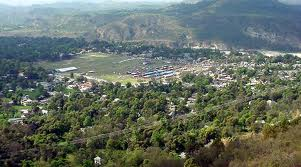
FESTIWAL
Maharaja Sansar Chand Katoch built large palaces and temples. Some of the temples are a piece of great architecture and Kangra paintings. Murlimanohar ( now known as Bansiwala) temple stands on the left side of the ground (Chowgan); Narvadeshwar temple dedicated to Shiva- Parvti Is full of great paintings inside the walls overlooking the bank of river Beas. It is surrounded by 8ft high wall with passage all around. Another temple is Thakardwara not to speak of smaller temples. The temples were built 1790 AD and 1823 AD by Maharani Pransani Devi-Suketi Rani of Maharaja Sansar Chand Katoch. Maharaja Sansar Chand also built Chamunda Devi temple within the premises of the palace which still exists.The people of Sujanpurtira are very religious-minded and are the staunch believer of Indian Gods.
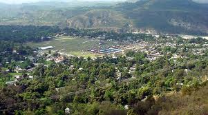
 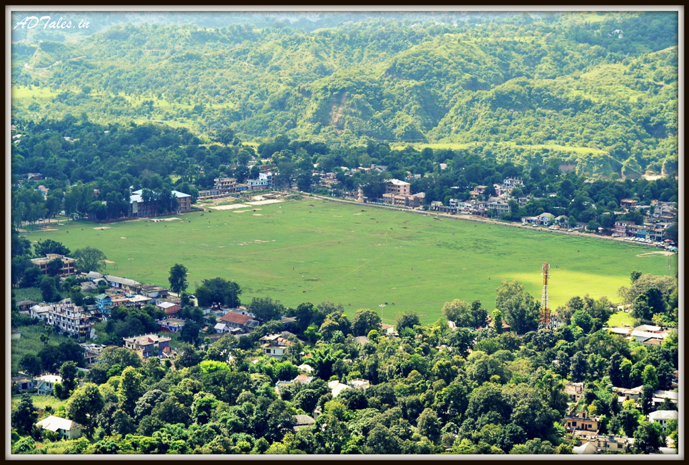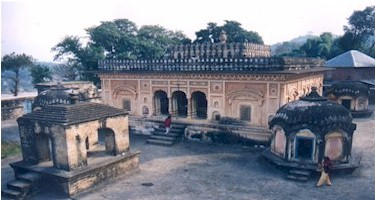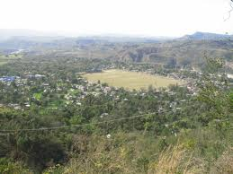
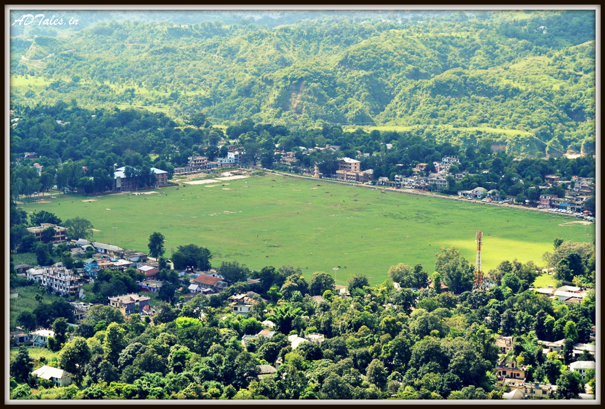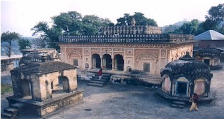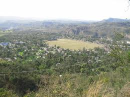


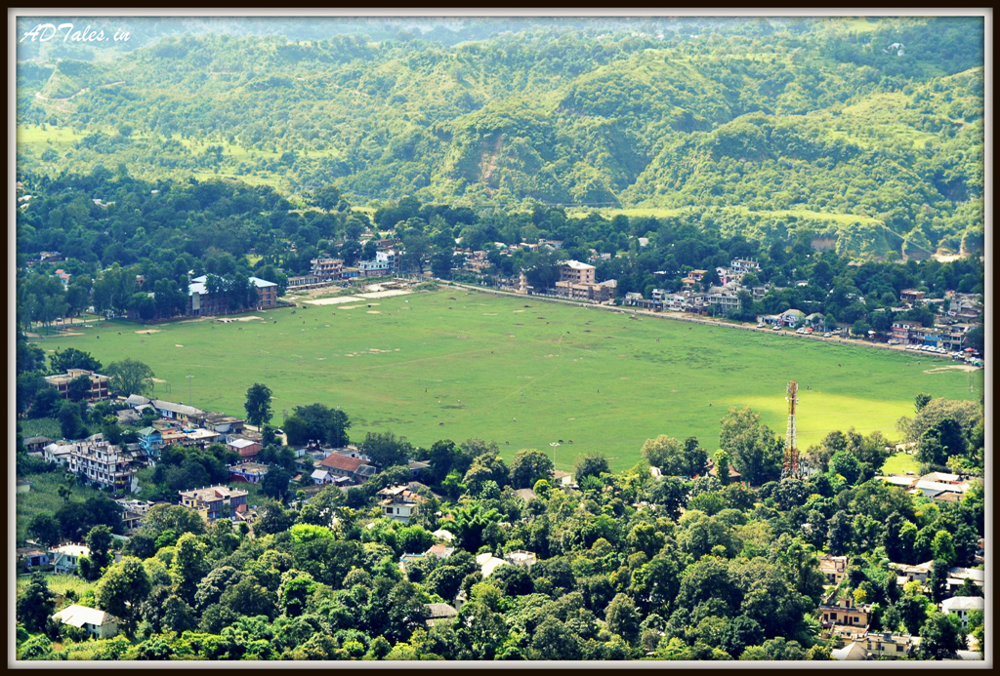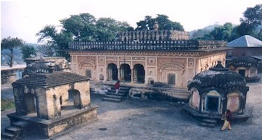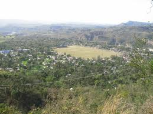